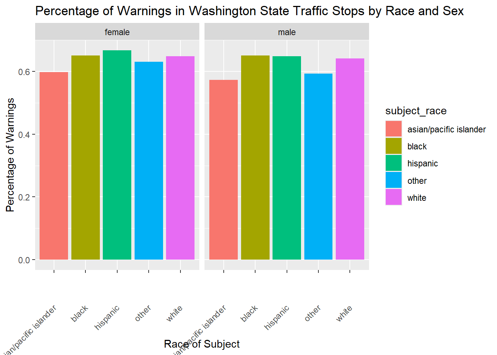

Code
library(RMariaDB)
library(tidyverse)Haddi Sise
In this project, I used data compiled by Pierson et. al in 2020. The data and more about the Stanford Open Policing Project can be found on their website (Click Here).
race_warning_citation |>
ggplot(aes(x = subject_race, y = perc_warning)) +
geom_col(aes(fill = subject_race)) +
labs(
x = "Race of Subject",
y = "Percentage of Warnings",
title = "Percentage of Warnings in Washington State Traffic Stops by Race and Sex"
) +
facet_grid(~subject_sex) +
theme(axis.text.x = element_text(angle = 45, vjust = 0.5, hjust=1))
This graph represents the proportion of traffic stops that end in warnings by race and gender in Washington State. Hispanic women seem to be slightly more likely than any other demographic to get a warning. Asian men and women are less likely to be let off with a warning than the other demographics. I am interested in how much negative stereotypes contribute to this result.
SELECT subject_sex,
SUM(1) AS total,
'SF' AS city,
SUBSTRING(time, 1, 2) AS hour
FROM ca_san_francisco_2020_04_01
WHERE time IS NOT NULL
GROUP BY subject_sex, hour
UNION
SELECT subject_sex,
SUM(1) AS total,
'LA' AS city,
SUBSTRING(time, 1, 2) AS hour
FROM ca_los_angeles_2020_04_01
WHERE time IS NOT NULL
GROUP BY subject_sex, hour;ca_sex_stops |>
mutate(hour = as.numeric(hour)) |>
group_by(city) |>
mutate(total_stops = sum(total)) |>
ungroup()|>
mutate(prop_stops = total/total_stops) |>
ggplot(aes(x = hour, y = prop_stops, color = subject_sex)) +
geom_line() +
labs(
x = "Hour of the Day",
y = "Proportion of Stops",
Title = "Proportion of Stops in San Francisco vs California at Various Times of the Day"
) +
theme_classic()+
facet_grid(~city)This graph represents proportion of stops that happen throughout different times of the day in San Francisco and LA separated by gender, in order to tell us at specific times of day what proportion of traffic stops are men and what proportion of traffic stops are women. One very obvious trend is that men are more likely to be pulled over. The least amount of traffic stops happen around 5 AM. In LA the peak time for traffic stops is 8 PM but in San Francisco the peak time for traffic stops is around 11 PM.
Pierson, Emma, Camelia Simoiu, Jan Overgoor, Sam Corbett-Davies, Daniel Jenson, Amy Shoemaker, Vignesh Ramachandran, et al. 2020. “A Large-Scale Analysis of Racial Disparities in Police Stops Across the United States.” Nature Human Behaviour, 1–10.